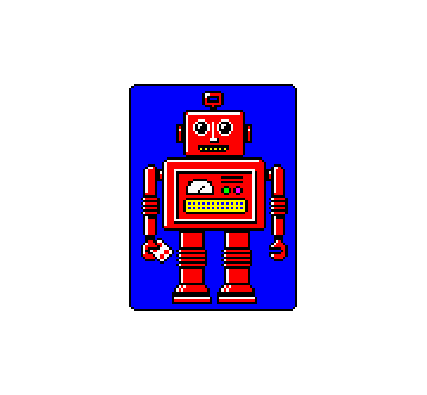
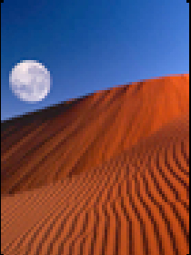

Tap the highest card you want to move — everything below it comes along.
Start New Game?
Your current game will be lost.
How to Play
Spider Solitaire
Two decks (104 cards) are in play. 54 are dealt across 10 tableau columns (only the top card of each face-up); the other 50 sit in the draw pile.
Build tableau columns DOWN one rank at a time — any suit can sit on any other, unlike Klondike. An empty column accepts any card.
Only a run that's the same suit and perfectly sequential can be dragged as a group. A mixed-suit sequence still looks tidy on the table, but you can only move one card of it at a time.
Build a complete King-to-Ace run of one suit anywhere in a column and it clears itself off to a foundation slot automatically — no need to drag it there.
Tap the draw pile (or the Deal button) to deal one new face-up card onto every column — only when no column is empty.
Undo reverses your last move. Hint highlights one move you can currently make.
Settings lets you choose how many suits (1-4) the deck is built from — 1 suit is the easiest classic variant, 4 is the hardest.
Settings
Card back applies instantly. Timer/score too.
1 suit is the classic easiest deal (every card is a Spade); 4 is the classic hardest (all four suits mixed in). Applies on your next New Game.


Show Timer
Show Score
Thoughtful
Shows face-down tableau cards, dimmed, for planning ahead — they still can't be touched.
Find Next
Adds a button next to Undo/Hint/Deal — select a card (or one of the cards in a run) first, then tap it to highlight every column that run could legally land on right now.
Plays the win cascade + dialog without touching your current game.